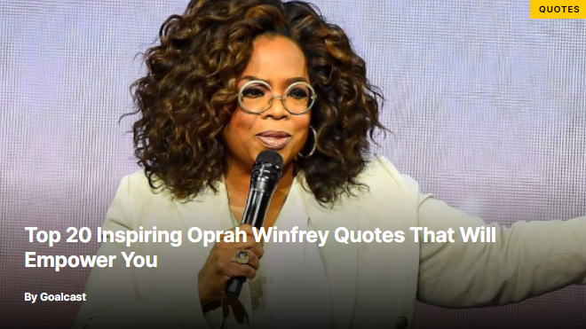

About
America's first lady of talk shows, Oprah Winfrey is well known for surpassing her competition to become the most watched daytime show host on television. Her natural style with guests and audiences on the Oprah Winfrey Show earned her widespread popularity, as well as her own production company, Harpo, Inc.
A difficult childhood
Opera Winfrey Childhood
Oprah Gail Winfrey was born to Vernita Lee and Vernon Winfrey on an isolated farm in Kosciusko, Mississippi, on January 29, 1954. Her name was supposed to be Orpah, from the Bible, but because of the difficulty of spelling and pronunciation, she was known as Oprah almost from birth. Winfrey's unmarried parents separated soon after she was born and left her in the care of her maternal grandmother on the farm. As a child, Winfrey entertained herself by "playacting" in front of an "audience" of farm animals. Under the strict guidance of her grandmother, she learned to read at two and a half years old. She addressed her church congregation about "when Jesus rose on Easter Day" when she was two years old. Then Winfrey skipped kindergarten after writing a note to her teacher on the first day of school saying she belonged in the first grade. She was promoted to third grade after that year. At six years old Winfrey was sent north to join her mother and two half-brothers in a Milwaukee ghetto, an extremely poor and dangerous neighborhood. At twelve years old she was sent to live with her father in Nashville, Tennessee. Feeling secure and happy for a brief period she began making speeches at social gatherings and churches, and one time earned five hundred dollars for a speech. She knew then that she wanted to be "paid to talk." Winfrey, again, was called back by her mother, and she had to leave the safety of her father's home. The poor, urban lifestyle had its negative effect on Winfrey as a young teenager, and her problems were compounded by repeated sexual abuse, starting at age nine, by men that others in her family trusted. Her mother worked odd jobs and did not have much time for supervision. After years of bad behavior, Winfrey's mother sent her back to her father in Nashville.
A turning point
Opera & her Father
Winfrey said her father saved her life. He was very strict and provided her with guidance, structure, rules, and books. He required his daughter to complete weekly book reports, and she went without dinner until she learned five new vocabulary words each day. Winfrey became an excellent student, participating as well in the drama club, debate club, and student council. In an Elks Club speaking contest, she won a full scholarship to Tennessee State University. The following year she was invited to a White House Conference on Youth. Winfrey was crowned Miss Fire Prevention by WVOL, a local Nashville radio station, and was hired by the station to read afternoon newscasts. Winfrey became Miss Black Nashville and Miss Tennessee during her freshman year at Tennessee State. The Nashville Columbia Broadcasting System (CBS) affiliate offered her a job, Winfrey turned it down twice, but finally took the advice of a speech teacher, who reminded her that job offers from CBS were "the reason people go to college." The show was seen each evening on WTVF-TV, and Winfrey was Nashville's first African American female coanchor of the evening news. She was nineteen years old and still a sophomore in college.
Official Biography
Success Story of American Media Mogul
Through the power of media, Oprah Winfrey has created an unparalleled connection with people around the world. As host and supervising producer of the top-rated, award-winning The Oprah Winfrey Show, she entertained, enlightened and uplifted millions of viewers for 25 years. Her accomplishments as a global media leader and philanthropist have established her as one of the most respected and admired public figures today. Oprah Winfrey is one of the richest and most powerful American women. She is sort of America’s alter ego, a woman loved and admired by everyone, worshipped by all types of TV audiences. Oprah Winfrey is also the Chairwoman, CEO, and CCO of her own company Oprah Winfrey Network. Winfrey does it all in her uniquely sincere manner, never bulldozing her way to the top. She is the embodiment of American spirit and commercial success. Oprah Winfrey life story is a great example of a woman who has moved from rags to riches, risen from poverty to the top of the world, who changed America and the world for the better. She is the first African-American female billionaire.
Opera family
Books
List of 5 best Books by Oprah Winfrey
- What Happened To You?
- What I Know For Sure
- The Path Made Clear
- The Wisdom of Sundays
- Food, Health and Happiness
Opera Network (OWN)
Oprah Winfrey Network is an American multinational basic cable channel jointly owned by Warner Bros. Discovery and Harpo Studios that launched on January 1, 2011, replacing the Discovery Health Channel.
The network is led by talk show host and namesake Oprah Winfrey and largely features entertainment and lifestyle programming targeting African American audiences, and reruns of talk show programming from the Harpo Studios library (including Oprah's former eponymous series). Initially a 50/50 joint venture, Discovery acquired a larger stake in the network in 2017 and again in December 2020, when Discovery increased its ownership in OWN from 73% to 95%. Harpo remains a "significant" minority stakeholder and Winfrey is contracted with the channel through at least 2025.
As of February 2015, OWN is available to approximately 81.9 million pay television households (70.3% of households with television) in the United States.
Follow OWN on:
Quotes

“When you undervalue what you do, the world will undervalue who you are.”
― Oprah Winfrey
“Doing the best at this moment puts you in the best place for the next moment.” ― Oprah Winfrey
“Be thankful for what you have; you’ll end up having more. If you concentrate on what you don’t have, you will never, ever have enough.” ― Oprah Winfrey
“Turn your wounds into wisdom.” ― Oprah Winfrey
“You can have it all. Just not all at once.” ― Oprah Winfrey
“Real integrity is doing the right thing, knowing that nobody’s going to know whether you did it or not.” ― Oprah Winfrey
“One of the hardest things in life to learn are which bridges to cross and which bridges to burn.” ― Oprah Winfrey
“Challenges are gifts that force us to search for a new center of gravity. Don’t fight them. Just find a new way to stand.” ― Oprah Winfrey
“Challenges are gifts that force us to search for a new center of gravity. Don’t fight them. Just find a new way to stand.” ― Oprah Winfrey
“The thing you fear most has no power. Your fear of it is what has the power. Facing the truth really will set you free.” ― Oprah Winfrey
“Surround yourself only with people who are going to take you higher.” ― Oprah Winfrey
“True forgiveness is when you can say, “Thank you for that experience.” ― Oprah Winfrey
“Everyone wants to ride with you in the limo, but what you want is someone who will take the bus with you when the limo breaks down.” ― Oprah Winfrey
“Do the one thing you think you cannot do. Fail at it. Try again. Do better the second time. The only people who never tumble are those who never mount the high wire.” ― Oprah Winfrey
“You get in life what you have the courage to ask for.” ― Oprah Winfrey
“The more you praise and celebrate your life, the more there is in life to celebrate.” ― Oprah Winfrey
“I trust that everything happens for a reason, even when we’re not wise enough to see it.” ― Oprah Winfrey
“Everybody has a calling. And your real job in life is to figure out as soon as possible what that is, who you were meant to be, and to begin to honor that in the best way possible for yourself.” ― Oprah Winfrey
“The key to realizing a dream is to focus not on success but on significance — and then even the small steps and little victories along your path will take on greater meaning.” ― Oprah Winfrey
“The biggest adventure you can ever take is to live the life of your dreams.” ― Oprah Winfrey
The Oprah Winfrey Show
Oprah Winfrey is a talk show host, media executive, actress and billionaire philanthropist. Born in the rural town of Kosciusko, Mississippi, Winfrey moved to Baltimore in 1976, where she hosted People Are Talking. Afterward, she was recruited by a Chicago TV station to host her own morning show. September 8, 1986, marked the advent of a globally popular show that garnered an audience from more than 130 countries across the world. The Oprah Winfrey Show, on this day, went up on American screens for the very first time.
Last episode of Oprah Winfrey's Show
On November 20, 2009, Winfrey officially announced that The Oprah Winfrey Show would conclude in 2011, after its 25th and final season. Winfrey explained that 25 was "the perfect number _ the exact right time", and that "I love this show. This show has been my life.
Awards
Among the most successful global media leaders the world has witnessed, Oprah Winfrey has been an American Talk Show host, news anchor, television producer, actress, entrepreneur, author and philanthropist in her career spanning over 40 years. Oprah has been called the “Queen of All Media”. She has been an academy award nominated actress for her supporting role in Steven Spielberg’s 1985 movie “The Color Purple”. She has acted and voiced in over a dozen series, movies and animation films since then. In January 2018, Oprah Winfrey received the prestigious Golden Globes’ Cecil B. DeMille Award. She was the first African American woman to be honored with it.
Here are some important accomplishments of Oprah Gail Winfrey:
| Time | Award |
|---|---|
| Guild Awards-David L. Wolper Award for Outstanding Producer of Long-Form Television: Nominated. | |
| Emmy-Outstanding Limited Series: Nominated. | |
| Emmy-Outstanding Television Movie: Nominated. | |
| Independent Spirit Awards-Best Feature: Nominated. | |
| Critics' Choice Movie Awards-Best Supporting Actress: Nominated. | |
| Oscar-Best Motion Picture of the Year: Nominated. | |
| BAFTA Film Awards-Best Supporting Actress: Nominated. | |
| Emmy-Outstanding Documentary or Nonfiction Special: Nominated. | |
| Emmy-Outstanding Informational Series or Special: Nominated. | |
| Screen Actors Guild Awards-Outstanding Performance by a Female Actor in a Supporting Role: Nominated. | |
| Screen Actors Guild Awards-Outstanding Performance by a Cast in a Motion Picture: Nominated. | |
| People's Choice Awards-Favorite Talk Show Host: Winner. | |
| Emmy-Outstanding Made for Television Movie: Winner. | |
| People's Choice Awards-Favorite Female TV Performer: Winner. | |
| People's Choice Awards-Favorite Female TV Performer: Winner. | |
| Emmy-Outstanding Informational Special: Nominated. | |
| Emmy-Outstanding Miniseries: Nominated. | |
| People's Choice Awards-Favorite Talk Show Host: Winner. | |
| 1986: Golden Globe-Best Performance by an Actress in a Supporting Role in a Motion Picture: Nominated. |